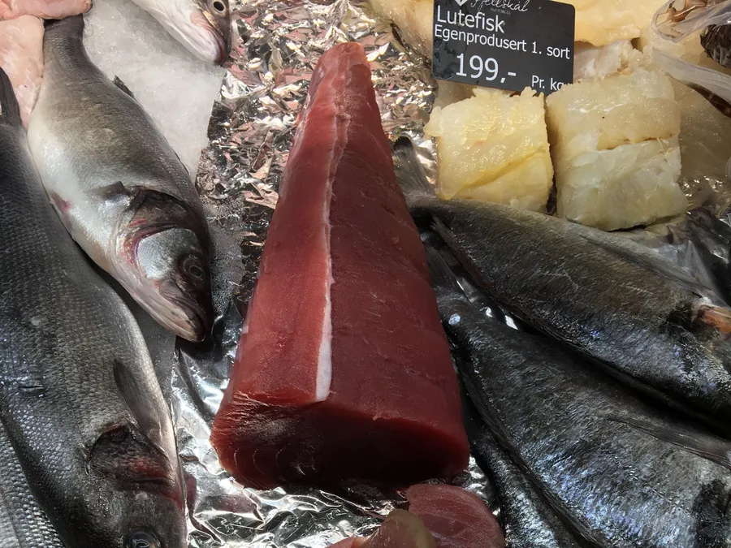

Orata
La più venduta della casa, in sei pezzature. La 300/400 è la porzione singola, la 600/800 il filetto da due, sopra il chilo si va al sale o al forno intero.
Pezzature
200/300300/400400/600600/800800/10001000/1500
Provenienza
Chiedi disponibilità e prezzo
GreciaSpagnaCroaziaTurchiaItaliaCapraia